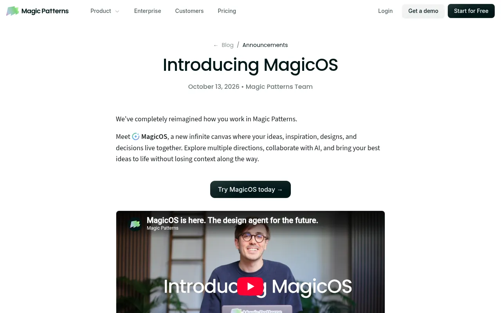
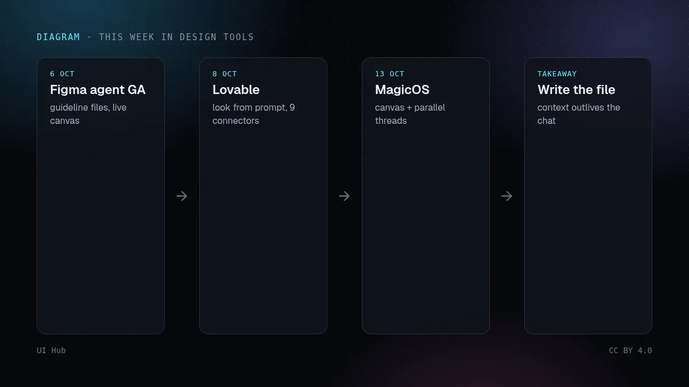
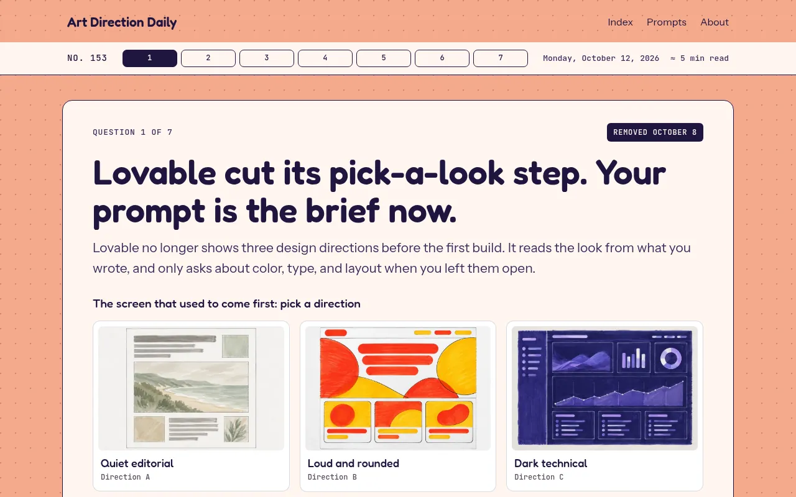

本周设计工具新闻有一个共同主题：美术需求正从聊天框搬进能长期保存的文件和画布。日期均以各厂商自己的公告为准。

MagicOS 发布文章 · 截图：Magic Patterns（www.magicpatterns.com），2026-10-14 截取，版权归原站所有
本周新闻
- 10/6 · Figma：产品设计智能体结束 5 月开始的测试，正式可用。组件库所有者可以附加 Markdown 规范文件供智能体读取；队友可以在画布上看到智能体的操作。
- 10/8 · Lovable：取消了首次构建前的三个设计方向选项，外观直接来自你的提示，只有没说清时才追问。同一天还上线了九个应用和聊天连接器（包括 Zendesk、Neon、Metabase）以及 Loom 聊天连接器。
- 10/13 · Magic Patterns：推出 MagicOS：无限画布，由协调者对话并行运行多个设计线程，支持实时语音，并提供给编程智能体用的 MCP 服务。
- Chrome：团队发布了 HTML-in-Canvas API 的进展，让 canvas 和 WebGL 能绘制真实的 DOM 和 CSS，目前处于源试用（origin trial）阶段。

时间线：Figma 智能体正式可用、Lovable 改动、MagicOS 发布 · 示意图：UI Hub 原创，CC BY 4.0

Art Direction Daily 关于 Lovable 改动的一期 · 截图：Art Direction Daily（artdirectiondaily.com），2026-10-14 截取，版权归原站所有你可以做什么
- 现在就写（或整理）你的设计规范文件；一周内三个工具开始读这种文件。
- 在每个应用生成器的提示里，把风格段落放在最前面。
- 需要探索很多方向，试试画布类工具；只打磨一个页面，继续用单个设计。
下周的周报会根据本站每日更新的内容生成并发布在这里。